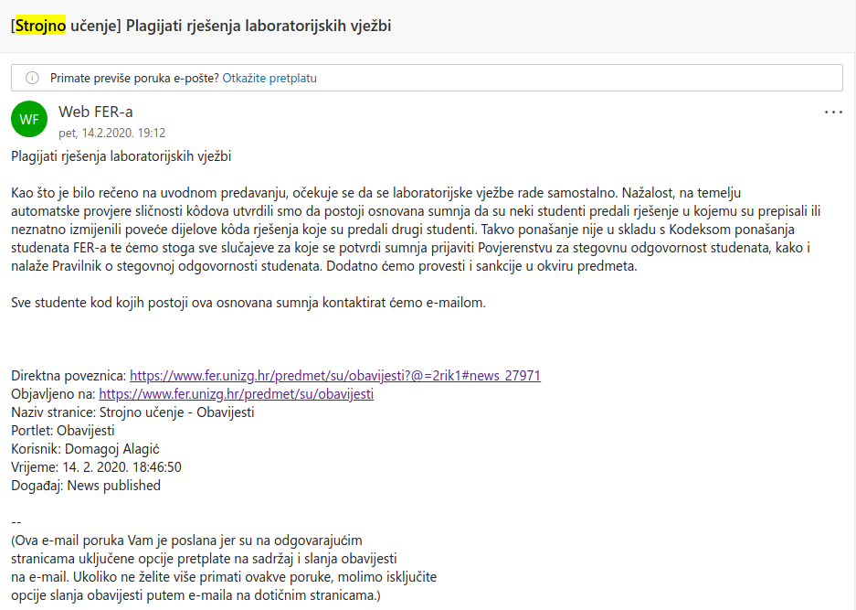

a_ko_si_ti Na ferwebu na prijava/odjava isit vec pise da je rok 8.2.(opet ponedjeljak prvi…)
Smolaa bez iznimke zaboravim da se rokovi moraju prijavit. Hvala na informaciji 🙂
Bonus bodovi iz kvizova ce se upisat/osvjezit tek nakon sto produ svi zadani rokovi?
jel ima netko da mu bodovi sa labosa u petak u 17h nisu jos upisani bodovi?
Skaxen
odgovarao sam u pon u 8 ujutro…i dalje nisu upisani
Murin Kod koga si odgovarao?
post
Kod Alagica, pricekat cu jos danas pa ak ne budu upisani budem slao mail
Koji zadaci su na MI bili krivi? U obavjesti od prošle godine piše da će objavit korigiranu verzija ispita, al ja je ne mogu nigdi nać, jel zna itko di se nalazi? Pripremam se za rok i ne mogu nikako nastimat na tocan odgovor, pa da ne trosim vrime.
a_ko_si_ti Što nije bilo da je onaj zadatak s OVO:OVR imao ponuđena dva ista rješenja ili tako nešto?
Emma63194 je da, bas sam sad dosa do toga. Izgleda da se moram pomirit da ostale ne mogu nastimat 😅
Ima li neki kolega da je pao na plagijatima? Jesu li već poslali mailove? Nije da sam ja plagirao nego….pitam za prijatelja….
hi_doggy rumor has it da su prošli plagijati, ak nisi dobio do sad okej si
Jel 4. lab ni ostalima jos nije upisan? Nisu mi upisana ni zadnja 3 Moodle kviza.
RogerRoger
Posalji mail, mozda je asistent zaboravio upisati
Murin dakle tebi su upisali? Ako jesu slat cu mail.
RogerRoger ni meni nisu upisali jos bodove iz zadnjih moodle kvizova
Dap, ja sam morao poslat mail da upise
pepelko jesu ikome?
MJ3 Nisu. Max je 3 boda po nastavnim aktivnostima. Ali mislim da je tek jučer istekao rok da se svi oni i riješe, pa će to vjerojatno upisat skupa s uvidima i plagijatima.
[obrisani korisnik] mislim da bi svi trebali dobiti ovak nešto

prošle godine je doduše ovo došlo dan nakon uvida, tak da možda samo nisu poslali mejl (ili nisu nikog našli/tražili) ak ste imali uvide već
M̵̧̩͑̀͝î̶͍̉ć̴̝̾́̀o̶̺̟̣͂̽ nediljko dobili smo svi već ovo, ne pratiš